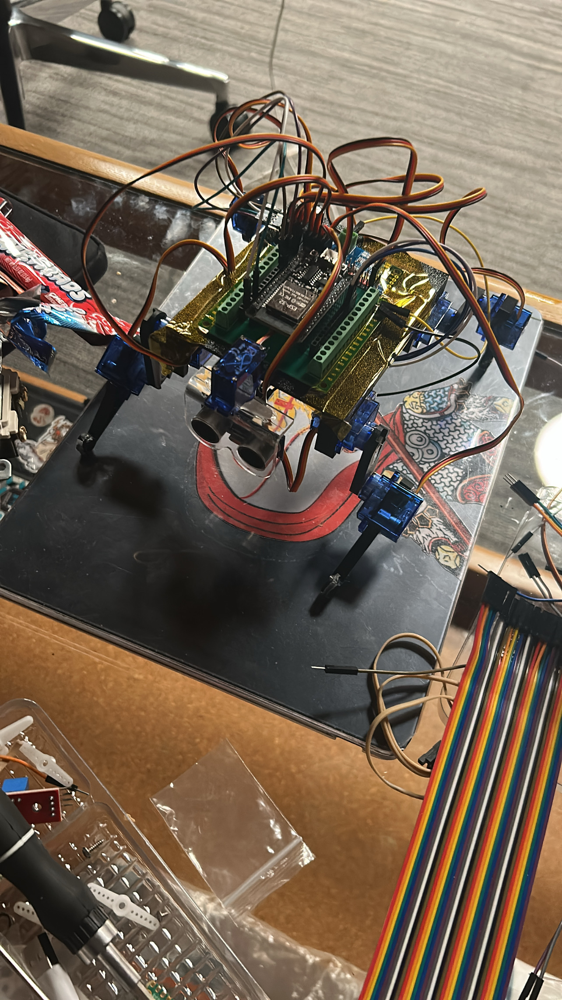

UI/UX Project 1
Project 1 stuff over here (Placeholder till college)
UI/UX Project 2
Project 2 stuff over here (Placeholder till college)
UI/UX Project 3
Project 3 stuff over here (Placeholder till college)
UI/UX Project 4
Project 4 stuff over here (Placeholder till college)
Connection Executor 9600X (RobotDog)
A 9-servo robot dog that can roam around autonomously, utilizing an ultrasonic sensor to avoid obstacles.

This was a project built for a 4 day hardware hackathon called "Stasis". It features a robotdog that uses 8 servo motors and inverse kinematics in order to replicate 4-legged movement. Another servo motor is attached to an ultrasonic sensor to act as the head for the robodog and detect incoming obstacles. A light switch (for the special ingredient) is present in the back of the robot to act as a quick on/off switch. There are 2 separate modes for the robot dog, one that you can manually control movement through the console, and another one where the robot dog will walk autonomously.
My team and I thought of making this robot dog because we wanted to challenge our own skills, while venturing into the "still-new" field of robotics for us. For a unique twist we attached a flag to the back of the robot dog that featured our socials, so it can roam around the venue and attract attention from fellow participants.
Majority of the time I worked on creating the 3D printed frames for our robot dog, as well as wiring all the components up while retaining wire management. I also took part in coding the inverse kinematics for both modes of the robot dog. I learned to apply continuous iterations to the custom designed robot dog frame and make tradeoffs between "ideal" building decisions compared to most realistic ones due to the time constraint given.
Materials Used
- Servo Motors
- ESP-32
- Ultrasonic Sensor
- Servo Driver (16 Channel)
- 5V Portable Battery
- 8 Ohms Circular Speaker
- Audio Amplifier Board
- Jumper Wires
- Light Switch
Progress Photos



RoboArm
A 2 jointed robot arm that is able to be controlled wireless through a smartphone.

RoboArm is a robotic arm that has 2 movable joints, a base that is capable of horizontal movement, and a gripper that's able to open and close. The design for RoboArm, including the gears, are all custom made and 3D printed by me on AutoDesk Inventor. There are small cuts and indents in order to help with wiring space throughout the design.
This was one of the first robotics projects that I did completely on my own without the assistance of anyone else. It was pretty challenging trying to make gears from scratch and ensure all the tolerances would function as intended. It took a lot of trial-and-error especially since each 3D print would come out a little different.
Throughout this project I learned how to design specifically for manufacturing tolerance because it was completely different then the tolerance shown in the 3D model application. Additionally, I experienced what it felt to build alone, having only myself to rely on even during rough times when let's say the servo motor movement wasn't as intended. It taught me a lot about resilience and grit, just pushing through with the final goal in mind.
Materials Used
- Servo Motors SG90
- Ball Bearings
- ESP-32
- AA Batteries
- 4 AA Battery Holder
- Jumper Wires
- DC Barrel Jack to Screen Adapter
Progress Photos


DesignOS
Custom-coded portfolio with the intent of functioning as a desktop OS right on any web browser.

I originally thought of the idea to build DesignOS because I realized how majority of the portfolio sites are all generated from generic website builders. In a world of talented designers, I wanted to make a portfolio that would leave a lasting impression on everyone who came across it. So, here I am building DesignOS, and trying to make this a reality. It essentially acts as an operating system functioning on any web browser with the "apps" displaying a variety of my projects and things about me.
In order for the entire interface to feel like an actual OS, I made sure to add Z-Indexing, which is basically organizing windows into specific layers (so the most recently clicked window is at the very top). Also, I implemented a bunch of mini animations when your cursor is hovered to give off a very minimalistic but sleek feel. There are a lot of subtle transition details I added that would make the entire OS experience feel more premium.
When I first started this project I was still pretty new to JavaScript and HTML, so through creating DesignOS I also became more efficient with the languages. It also taught me to think outside the box for a lot of problems, especially since I created this portfolio because I wanted to somehow differentiate myself. I truly enjoyed working on DesignOS, since I was able to express myself through this OS with all the elements and projects present.
Tech Stack
- Frontend: JavaScript, HTML, CSS
- Hosting: GitHub Pages
- Version Control: GitHub
- Development Tools: Visual Studio Code, Live Server Extension
Key Features
Each window of the OS can be dragged through the title bar and brought to the front upon clicking through a shared z-index counter. I wanted to make sure that the OS felt like an actual operating system, so I implemented this feature to make it feel more realistic rather than just a simple web page.
Throughout the OS, I implemented various subtle animations to enhance the user experience. These include smooth transitions when opening and closing windows, as well as hover effects on interactive elements.
DesignOS features a dual portfolio system, allowing users to explore my work in both the OS and traditional portfolio views. This allows the portfolio to accomodate users with different preferences and needs.
Where Stars Used to Sing
A narrative-driven game exploring the quiet beauty of the world that we tend to forget as we grow older.

The idea to create Where Stars Used to Sing came from when I was participating in GMTK 2026, the largest 4 day game jam on itch.io. The theme for the year was "Countdown", and after much brainstorming I wanted to interpret it in an unique sense so I created this narrative-driven game. The entire game essentially explores the concept of time and memory, showing that as we grow older, the world around us becomes more structured and less magical.
After the game jam ended, I found out that the game was rated top 4% for narrative and top 1% for popularity. I was thrilled with this accomplishment, considering I'm still relatively new to game development, so there's much more to learn. Throughout the game, I had to ensure that the narrative elements were well-integrated with the gameplay mechanics.
Since I built the game alone, I was able to learn a lot about game design and storytelling. At the end of the game jam, I did realize that there were still a couple of bugs and movement issues present, showing that I have much more to learn. This was an amazing experience for me and it allowed me to become a way better developer through learning new techniques and recognizing my strengths and weaknesses.
Tech Stack
- Game Engine: Custom 2D Engine (Vanilla JavaScript)
- Frontend: JavaScript, HTML, CSS
- Asset Creation: Sprite Fusion
- Hosting: Itch.io
- Version Control: GitHub
- Development Tools: Visual Studio Code, Live Server Extension
Key Moments

The dialogue system was designed to create an immersive storytelling experinece, where random NPCs would be able to interact with the player in meaningful ways. This made the game feel much more alive and engaging for users.

The pixel blocking feature was implemented to create a more authentic retro gaming experience, ensuring that sprites and backgrounds interacted properly. I had to ensure that stationary objects such as buildings or trees would not allow the player to walk or phase through them.

Throughout the game, I scattered clues in each of the maps where the players would have to focus on the dialogue to uncover. This allowed for a more versatile and engaging gameplay experience, where players can uncover secrets through their careful observations.

Towards the end of the game, players are given the choice to alter the outcome of the entire story based off of their own decision. The choices present reflect the entire journey that the players went through, and it leaves the ultimate fate of the story in the hands of the player. Both endings are designed to leave a lasting impact and allow the player to think about how the game relates to their own lives.